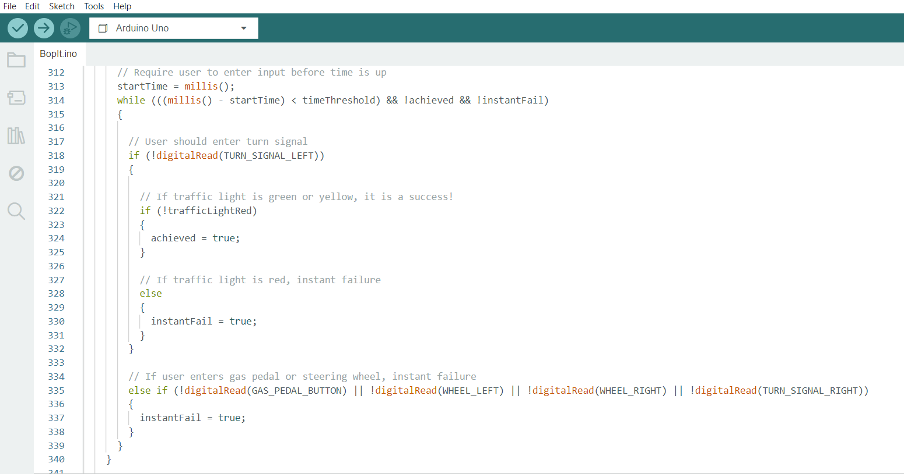
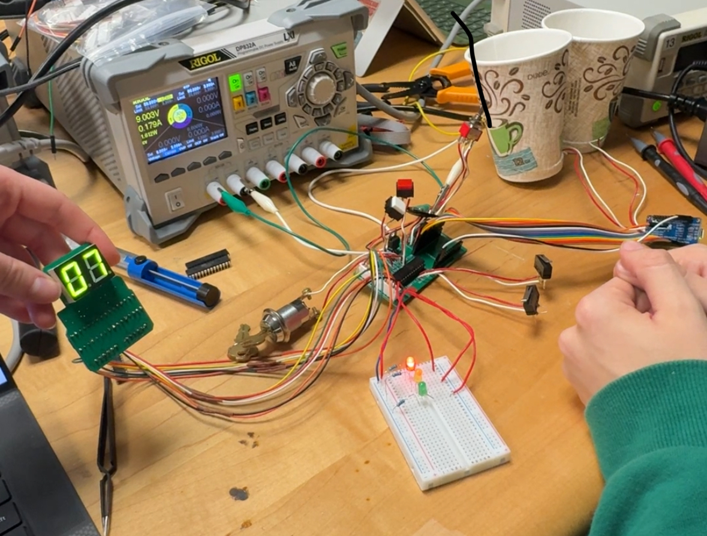
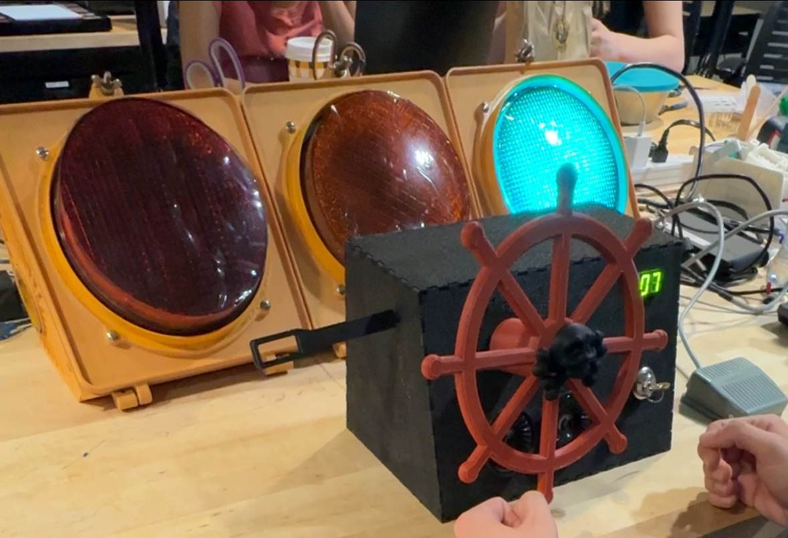
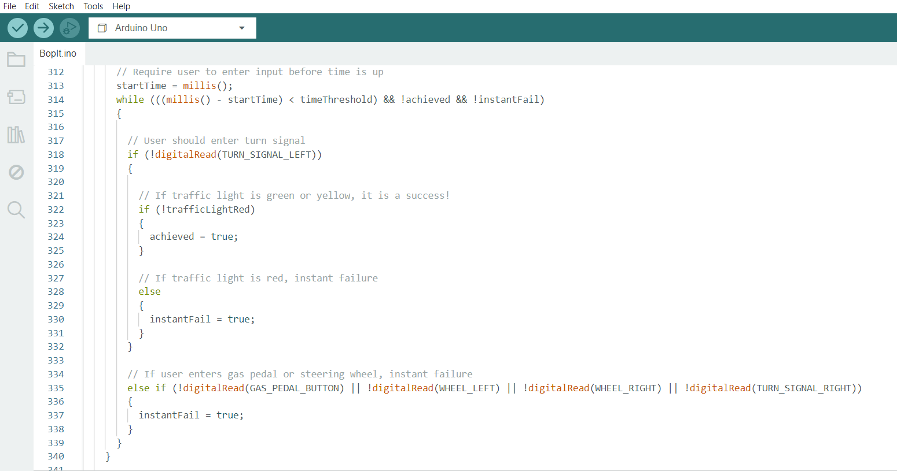
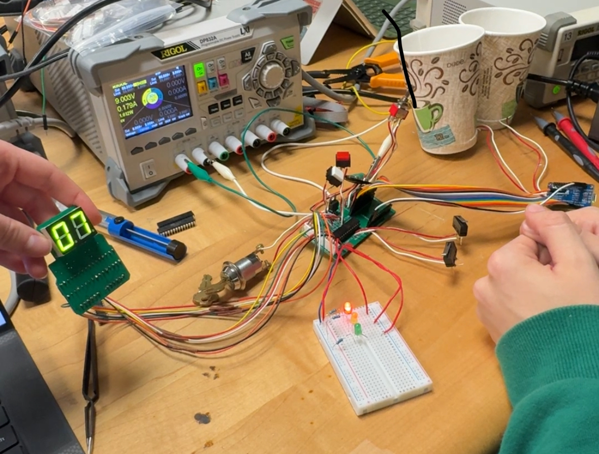
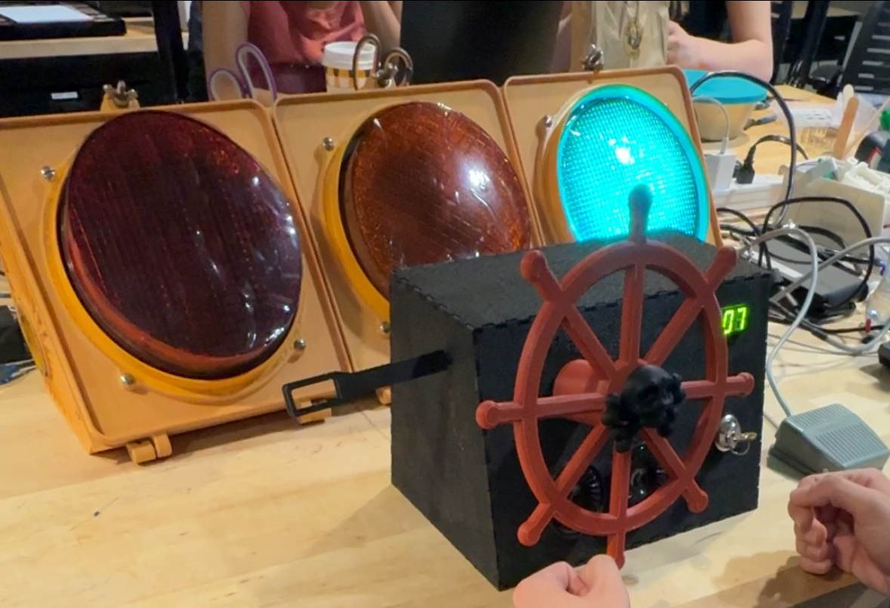

Developed for ECE 1895: Junior Design Fundamentals. My three-person group was tasked with creating a custom Bop-It! toy that met a list of specifications involving portability, distinct user inputs, audio/visual feedback, and more.
Our Bop-It! toy is modeled after a racecar (sort of). The attached traffic light adds a "Simon Says" twist to the game: when the light is green, the user must enter the requested input within the time limit; when the light is red, the user must avoid entering any inputs.